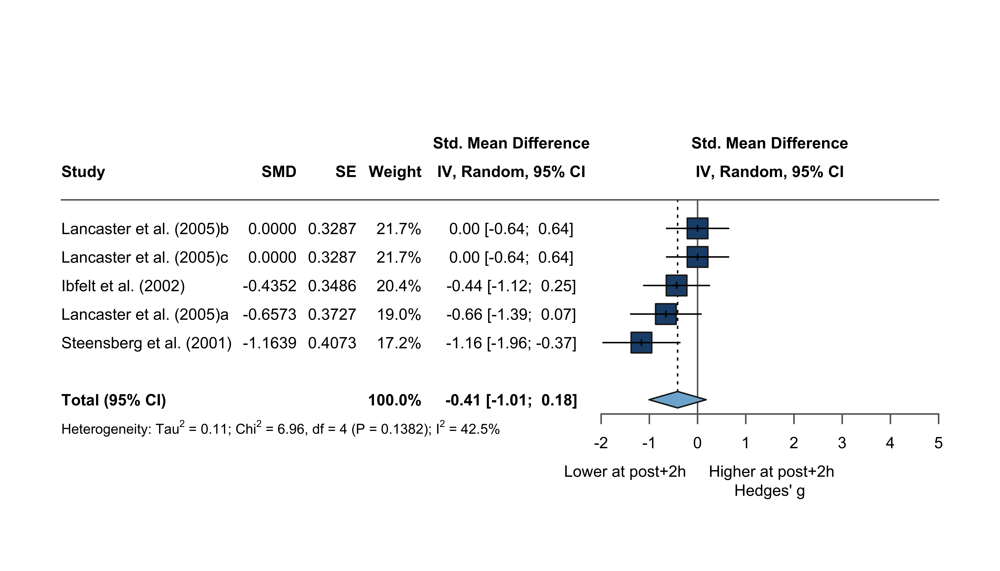

Code
fullData <- load_es("book/data/effect_size/Th1/pre_post+2h/Th1_pre_post+2h_r_050.csv")The ~2 h window (effect_size/Th1/pre_post+2h/Th1_pre_post+2h_r_050.csv) contains few arms and no cytokine/BMI coverage, so it is reported for the main analysis, outlier check, funnel, forest, and asymmetry only — no moderator modelling is possible. No study is excluded a priori in this window.
fullData <- load_es("book/data/effect_size/Th1/pre_post+2h/Th1_pre_post+2h_r_050.csv")m1 <- meta::metagen(TE = g, seTE = SE_g, data = fullData, studlab = paste(Study),
random = TRUE, method.tau = "HE", fixed = FALSE,
hakn = TRUE, prediction = TRUE, sm = "SMD")
print(m1, overall = TRUE)Number of studies: k = 5
SMD 95% CI t p-value
Random effects model (HK) -0.4137 [-1.0063; 0.1789] -1.94 0.1247
Prediction interval [-1.5190; 0.6917]
Quantifying heterogeneity (with 95% CIs):
tau^2 = 0.1110 [0.0000; 1.8375]; tau = 0.3332 [0.0000; 1.3555]
I^2 = 42.5% [0.0%; 78.9%]; H = 1.32 [1.00; 2.17]
Test of heterogeneity:
Q d.f. p-value
6.96 4 0.1382
Details of meta-analysis methods:
- Inverse variance method
- Hedges estimator for tau^2
- Q-Profile method for confidence interval of tau^2 and tau
- Calculation of I^2 based on Q
- Hartung-Knapp adjustment for random effects model (df = 4)
- Prediction interval based on t-distribution (df = 4)metafor::rma(yi = g, sei = SE_g, data = fullData, slab = paste(Study),
method = "HE", test = "knha")
Random-Effects Model (k = 5; tau^2 estimator: HE)
tau^2 (estimated amount of total heterogeneity): 0.1110 (SE = 0.1699)
tau (square root of estimated tau^2 value): 0.3332
I^2 (total heterogeneity / total variability): 46.86%
H^2 (total variability / sampling variability): 1.88
Test for Heterogeneity:
Q(df = 4) = 6.9560, p-val = 0.1382
Model Results:
estimate se tval df pval ci.lb ci.ub
-0.4137 0.2134 -1.9381 4 0.1247 -1.0063 0.1789
---
Signif. codes: 0 '***' 0.001 '**' 0.01 '*' 0.05 '.' 0.1 ' ' 1outlier <- metaoutliers(y = m1$TE, s2 = m1$seTE^2, model = "RE")
stdres <- outlier$std.resfullData |> select(Short_reference, g) |> mutate(std_res = outlier$std.res) |> nice_table()| Short_reference | g | std_res |
|---|---|---|
| Ibfelt et al. (2002) | -0.435 | -0.031 |
| Steensberg et al. (2001) | -1.164 | -2.079 |
| Lancaster et al. (2005)a | -0.657 | -0.510 |
| Lancaster et al. (2005)b | 0.000 | 1.031 |
| Lancaster et al. (2005)c | 0.000 | 1.031 |
plot_stdres(stdres)
No outcome has standardized residuals above 3 or below -3.
funnel_ce(m1, ref = 0.99, xlim = c(-1.5, 4), ylim = c(0.7, 0))
overall_metafor <- rma.mv(g, VE_g, tdist = TRUE, data = fullData)
df_betas <- dfbetas(overall_metafor)
fullData |> select(Short_reference, g) |> mutate(dfbetas = df_betas) |> nice_table()| Short_reference | g | dfbetas |
|---|---|---|
| Ibfelt et al. (2002) | -0.435 | -0.08474579 |
| Steensberg et al. (2001) | -1.164 | -0.87614442 |
| Lancaster et al. (2005)a | -0.657 | -0.38036241 |
| Lancaster et al. (2005)b | 0.000 | 0.73086010 |
| Lancaster et al. (2005)c | 0.000 | 0.73086010 |
One value below −1 and one above 1 were identified as influential cases. Neither is an outlier (Kostrzewa-Nowak & Nowak (2020a)a and Tsubakihara et al. (2012)); all outcomes are retained.
forest_main(m1, xlim = c(-2, 5), left = "Lower at post+2h", right = "Higher at post+2h")
Note: the number of studies (k = 5) is too small to reliably test for small-study effects (minimum k = 10; Borenstein et al., 2009). No Egger’s test or trim-and-fill is performed.